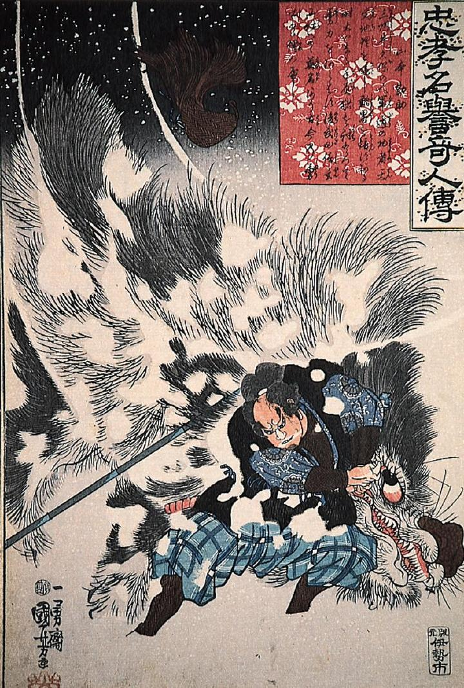

雪山で巨大な猪を組み伏せる山本勘助。猪の身体は白く雪で覆われている。
著作者：歌川国芳／出典：親書誌：M80_naprstek_0009：忠孝名誉奇人伝 山本勘助；チュウコウメイヨキジンデンヤマモトカンスケ／日付：2011／資源識別子：M80_naprstek_0009_0001_0000
Copyright (c)2010- International Research Center for Japanese Studies, Kyoto, Japan. All rights reserved.